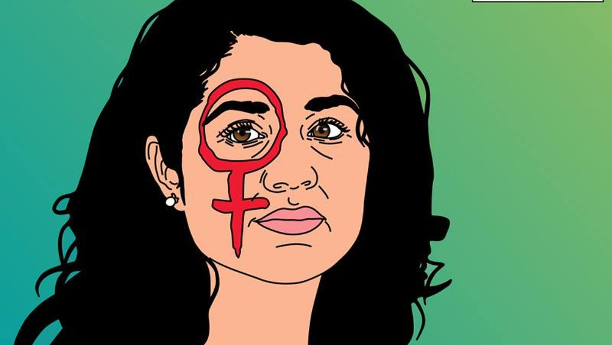
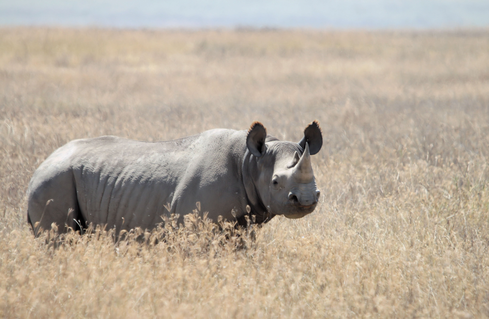
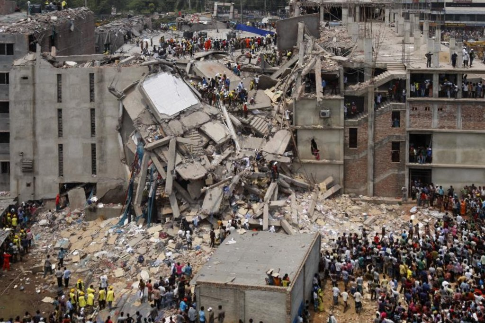
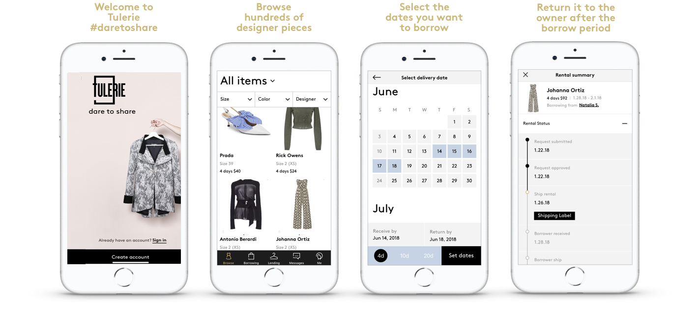
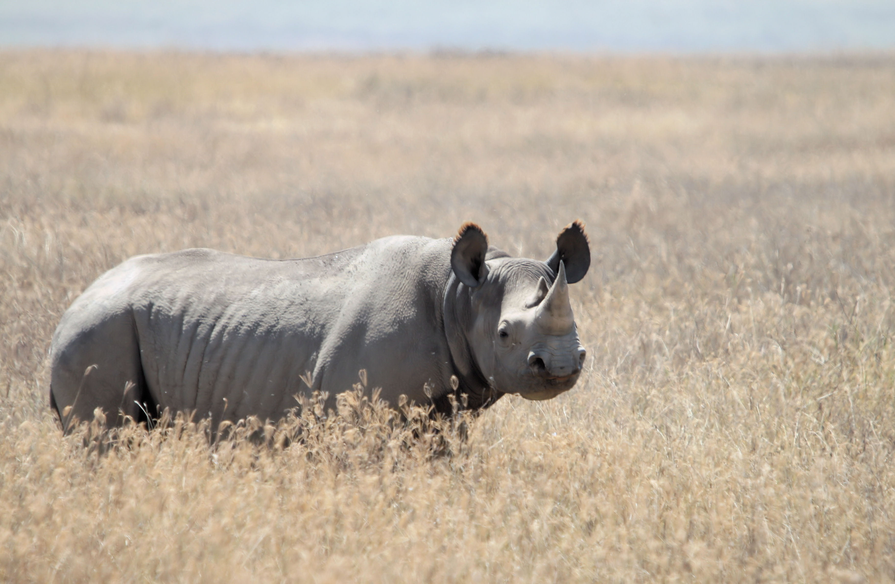
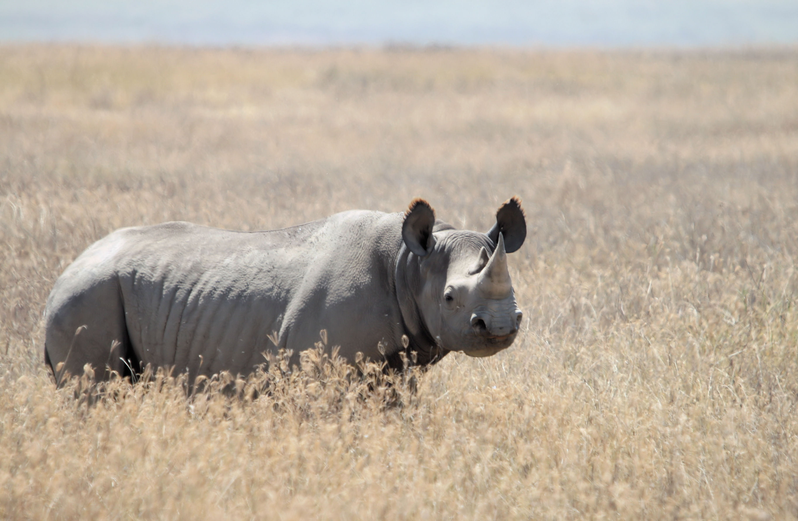

The 2020s were a decade of climate shocks,
which spurred the world into action. It was astonishing how quickly things began
to fall apart: large numbers of deaths resulting from food shortages in central
India, hundreds of thousands displaced by storm surge vents across Asia, to name
but a few.
By the middle of the decade, powerful investors and reinsurance companies
had realised that the financial implications of climate change were massive.
Through new investment strategies and intensive influencing from these
powerful voices, governments and businesses took a global U-turn in the
fight on climate change.
Emissions still have not peaked but by 2030 have levelled off, and are expected
to begin dropping in the next 3 years. Despite this turnaround, there is
still concern that we could breach the 2C threshold.
A new way of moving
As we enter the 30s, there is a global ban on fossil fuel subsidies and
the use of coal, which is a drastic change from what the world was originally
used to.
All new cars must be electric – all of which is monitored by UN Country Special
Rapporteurs. These actions are beginning to bear fruit: oil demand is plummeting, 40% of
the cars on our roads are electric or hybrid, and there is a major focus on making
agriculture carbon positive, as agriculture was once a big emitter of CO2 emissions.
The video below, created by BBC Ideas in 2019 gave an insight
to the public what the world could be like without fossil fuels.
The world is comprised of regionally-based economies, but with strong oversight by the
UN on global issues like climate change, poverty, and water scarcity.
Carbon prices are in place in most countries, and average $70/tCO2e in 2030,
incentivising investment in zero carbon solutions.
Renewables generate more than half of all energy globally. Over 65%
of power use on a global scale is generated from sun and wind energy.
It looks as though we will be able to meet a number of the SDGs, including
gender equality and reduced inequality, however many other SDGs especially with
strong ties to environmental sustainability such as clean water for all have not
been reached.
A change in business and wealth
Economies are more regionalised with a greater number of
small scale businesses with regional supply chains making more economic and
environmental sense.
Regions are very digitally connected, which is creating
strong communities of interest. This makes for more democratic, participatory
politics where digital pressure groups influence on key issues across national borders.
Certain cities have emerged as powerful and influential mayors from places
like San Francisco, Melbourne, KL and St Petersburg are sending representatives to the UN now.  Global economic growth has on average slowed down significantly and GDP
is no longer the metric of choice in many places. Societies track progress against
the SDGs alongside material wealth. The rapid carbon reduction of the late 2020s
has led to the adoption of a ‘post-consumerist’ paradigm. We are economically poorer
overall, but richer in social equality terms.
Click on the photo above to read an interview with María María, and
her artwork that "shows the lives of real women who have shaped
our world by advocating for a more just and equal society."
A world of advocating finally led to a wealth in social equality.
Concentration on the larger businesses
Large businesses are still influential within society, but only those that can demonstrate
strong environmental sustainability and full transparency across supply chains. Natural
capital accounting is mandatory in many countries.
Because the pressure coming from investors and governments is focused on
decarbonisation and adaptation to climate change, we are failing to mobilise adequately on
issues like biodiversity loss. As a result are witnessing some major extinction events by 2030,
including the Hawksbill Turtle and the Black Rhino.
Man-made structures are being installed in oceans to boost
coral growth.

In 2019, the Black Rhino and the Hawksbill Sea Turtle were
reported almost extinct. For the black rhino, poaching represents one of the biggest
threats to the survival of the rhino, as its horn is used in traditional folk medicine in China.
As for the Hawksbill Sea Turtle, it grows slowly and breeds rarely, which,
coupled with human hunting, drove the species to the brink. The turtles were exploited
for food and trinkets, putting wild populations continually in danger.
Sharing is Caring
The sharing economy dominates – ownership of many personal use goods, such as cars,
is down significantly. Social credit systems, similar to a credit score, are widespread as
people track their skills, reputation, and adherence to certain values. These are important
currencies in the sharing economy.
Sharing Economy
An economic system where assests or services (AirBNB)
are shared between private individuals, either for free or for a certain price,
typically by utilising the internet. It comes from the notion that mutual parties
can share value from an under-utilised skill or asset.
Back in 2019, it was considered the "Year of Veganism".
In Great Britain, the number of vegans in Great Britain quadrupled between 2014
and 2019.
Now, in 2030, vegetarianism is approaching the 50% mark globally.
Responding to decades of information bombardment, advertising, and digital interaction,
generations Z and Alpha seek a greater sense of time, experience and connection, which
is just as well because they lack disposable income.
However
There are pockets of social unrest from those who refuse to adapt to living
with less, including many on the radical right in the US and Europe and communities
that couldn't adapt to the decarbonisation agenda. These include many coal
mining communities in countries such as Indonesia, Australia, the U.S. and Russia.
There are pockets of the uber-rich who lay low because it is risky to be
seen as engaging in conspicuous consumption.
A fresh development
Progress on global farming systems was achieved through the sharing of best practice
and a move away from irrigation-fed agriculture, often by using low-tech innovations.
Community-managed forests, which were created to mitigate the increasing
deforestation and forest degradation to address the negative impacts on rural
livelihoods, now flourish in areas where soil erosion was a key issue
previously.
In large part due to carbon pricing policies, over 65% of power use on a
global scale is generated from sun and wind energy.
Fashion is still important
In the previous decade, it was well-known that fashion had a devastating
impact on the environment, with it being the second-largest polluter in the world
after the oil industry. Companies were over-creating seasonal collections,
consumers became wasteful in the number of garments that are discarded,
the amount of water fashion consumed and plastics and emissions it emits into both the atmosphere
and the ocean devastated the environment. Not only did the environment suffer,
but human rights were abused and companies disregarded the safety of their workers.

2013 Savar building collapse in the Savar Upazila
of Dhaka, Bangladesh. The eight-story commercial building named
Rana Plaza collapsed. The death toll was 1,134 innocent people.
Read more about it here.
Methods of designing, creating and using clothes have changed in 2030, but the ideals
surrounding fashion remains. Fashion continues to have an important function in societies,
clothing is treasured and kept for a long time, as well as passed down within family and friend groups.
Sharing networks, enabled by the social credit system proliferate. We
began to see this in 2018 with the creation of Tulerie.
Although it wasn't the first to allow people to rent high-end clothes and accessories, it was the
first platform to allow peer-to-peer sharing and renting clothes. How amazing
that it is now just the norm?!

A step-by-step explanation of how Tulerie in 2018
worked, when it was a new concept!
Credit for image
Knowing how and where something is produced is highly desirable.
This set of customer preferences – combined with regionalised production
levels and lower levels of income inequality overall – means that labour
exploitation is much less of an issue than in the past. Producers face heavy
fines for lack of compliance with strict pollution, emissions and working
condition laws.
There is a global ban on fur, as well as a very small market for leather, using hides that are a
by-product of a much smaller global meat industry. Additionally, they may be recycled from other industries such
as home goods and the auto industry. But a small contraband market for materials like
fur persists, fuelled by the ultra-rich unwilling to give up these ‘luxuries’.
 
